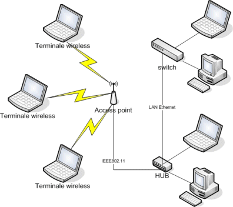

Tipologia
Si parla di rete personale o PAN (Personal area network) se la rete si estende intorno all'utilizzatore con una estensione di alcuni metri
Si parla di rete locale o LAN (Local area network) se la rete si estende all'interno di un edificio o di un comprensorio, con una estensione entro alcuni chilometri
Si parla di rete senza fili o WLAN (wireless local area network), se la rete locale è basata su una tecnologia in radio frequenza (RF), permettendo la mobilità all'interno dell'area di copertura, solitamente intorno al centinaio di metri all'aperto
Si parla di CAN (w:campus area network), intendendo la rete interna ad un campus universitario, o comunque ad un insieme di edifici adiacenti, separati tipicamente da terreno di proprietà dello stesso ente, che possono essere collegati con cavi propri senza far ricorso ai servizi di operatori di TLC. Tale condizione facilita la realizzazione di una rete di interconnessione ad alte prestazioni ed a costi contenuti.
Si parla di rete metropolitana o MAN (metropolitan area network) se la rete si estende all'interno di una città
Si parla di rete geografica o WAN (wide area network) se la rete si estende oltre i limiti indicati precedentemente
